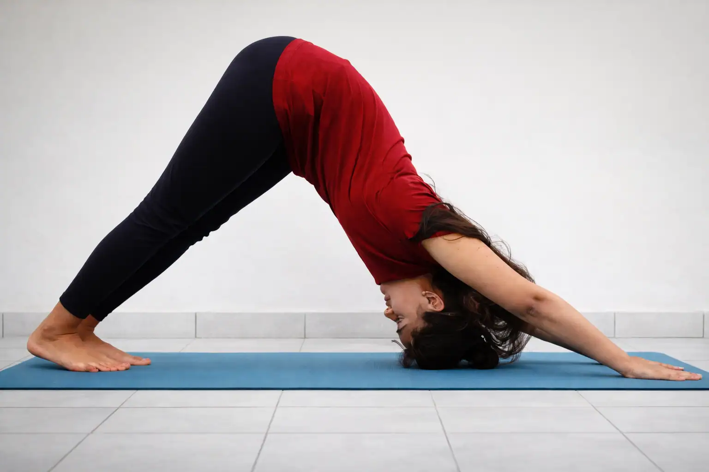

<script type="application/ld+json">
{
  "@context": "https://schema.org",
  "@graph": [
    {
      "@type": "Organization",
      "@id": "https://onlineyogaclass.in/#organization",
      "name": "Shringarika Mishra - Clinical Yoga",
      "url": "https://onlineyogaclass.in",
      "logo": "https://onlineyogaclass.in/images/logo.webp"
    },
    {
      "@type": "Person",
      "@id": "https://onlineyogaclass.in/#shringarika",
      "name": "Shringarika Mishra",
      "jobTitle": "Clinical Yoga Specialist & Research Scholar",
      "image": "https://onlineyogaclass.in/images/shringarika.webp",
      "sameAs": [
        "https://scholar.google.com/citations?user=FAp2CnkAAAAJ",
        "https://www.researchgate.net/profile/Shringarika-Mishra",
        "https://in.linkedin.com/in/shringarika-mishra-400607224"
      ]
    },
    {
      "@type": "BlogPosting",
      "@id": "https://onlineyogaclass.in/blogs/optimizing-ivf-success-the-synergy-of-clinical-yoga-and-ayurveda.html#article",
      "isPartOf": {
        "@id": "https://onlineyogaclass.in/blogs/optimizing-ivf-success-the-synergy-of-clinical-yoga-and-ayurveda.html"
      },
      "headline": "Optimizing IVF Success: How Clinical Yoga and Ayurveda Prepare Your Body for Implantation",
      "description": "Confused about how to improve your IVF success rate? Learn how Clinical Yoga and Ayurveda prepare your body's environment for embryo implantation in simple terms. Discover research-backed protocols to lower stress and balance hormones naturally.",
      "image": "https://onlineyogaclass.in/images/stress.webp",
      "author": {
        "@id": "https://onlineyogaclass.in/#shringarika"
      },
      "publisher": {
        "@id": "https://onlineyogaclass.in/#organization"
      },
      "mainEntityOfPage": "https://onlineyogaclass.in/blogs/optimizing-ivf-success-the-synergy-of-clinical-yoga-and-ayurveda.html"
    },
    {
      "@type": "BreadcrumbList",
      "@id": "https://onlineyogaclass.in/blogs/optimizing-ivf-success-the-synergy-of-clinical-yoga-and-ayurveda.html#breadcrumb",
      "itemListElement": [
        {
          "@type": "ListItem",
          "position": 1,
          "name": "Home",
          "item": "https://onlineyogaclass.in/"
        },
        {
          "@type": "ListItem",
          "position": 2,
          "name": "Clinical Blogs",
          "item": "https://onlineyogaclass.in/blogs.html"
        },
        {
          "@type": "ListItem",
          "position": 3,
          "name": "Optimizing IVF Success",
          "item": "https://onlineyogaclass.in/blogs/optimizing-ivf-success-the-synergy-of-clinical-yoga-and-ayurveda.html"
        }
      ]
    }
  ]
}
</script>

<main class="relative z-10 max-w-5xl mx-auto px-4 sm:px-6 lg:px-8 pt-32 pb-24">
    <div class="mb-10 max-w-3xl mx-auto rounded-[2.5rem] overflow-hidden bg-slate-50 border border-pink-50 shadow-md">
        
    </div>

    <div class="article-card bg-white border border-gray-100 rounded-[2.5rem] p-8 md:p-12 shadow-sm transition">
        <script type="application/ld+json">
    {
      "@context": "https://schema.org",
      "@type": "BlogPosting",
      "headline": "Optimizing IVF Success: How Clinical Yoga and Ayurveda Prepare Your Body for Implantation",
      "description": "Learn how Clinical Yoga and Ayurveda work alongside modern fertility treatments. Discover easy-to-understand pathways to improve uterine lining receptivity, lower procedure anxiety, and boost your energy balance naturally.",
      "keywords": "Clinical Yoga Varanasi, BHU Yoga Specialist, optimizing ivf success naturally, uterine receptivity clinical yoga, ayurveda fertility kshetra ambu, reduce cortisol during embryo transfer, pelvic vascularity fertility yoga, Shringarika Mishra research bhu",
      "author": {
        "@type": "Person",
        "name": "Shringarika Mishra"
      },
      "publisher": {
        "@type": "Organization",
        "name": "onlineyogaclass.in",
        "logo": {
          "@type": "ImageObject",
          "url": "https://onlineyogaclass.in/images/logo.webp"
        }
      }
    }
    </script>

    <span class="text-pink-600 font-bold text-xs uppercase tracking-widest">Assisted Reproduction, Neuro-Endocrine Care &amp; Holistic Integration</span>
    
    <h2 class="text-3xl md:text-4xl font-bold mt-6 mb-6 text-transparent bg-clip-text bg-gradient-to-r from-pink-600 via-purple-600 to-pink-700">Optimizing IVF Success: How Clinical Yoga and Ayurveda Prepare Your Body for Implantation</h2>
    
    <div class="flex flex-col md:flex-row gap-8 mb-8">
        <div class="md:w-1/3">
            
        </div>
        <div class="md:w-2/3">
            <p class="text-gray-600 text-lg leading-relaxed">
                Going through In Vitro Fertilization (IVF) is a very big step. It requires a massive amount of emotional, physical, and financial investment. While modern fertility clinics do an amazing job handling the complex, highly technical side of fertilizing the egg in a lab, they often leave out a crucial part of the puzzle. They focus on the "seed," but who is preparing the "soil"? Your body is the soil, and it needs to provide the ultimate, most welcoming environment for that embryo to implant and grow. 
            </p>
            <p class="text-gray-600 text-lg leading-relaxed mt-4">
                During my clinical research years at BHU, I closely observed how reproductive systems react to stress, blood flow changes, and internal hormonal fluctuations. A very common issue couples face is that even when they have a perfect, healthy embryo, the transfer fails because the womb is not ready or the nervous system is running on emergency mode. This is where the therapeutic combination of Clinical Yoga and Ayurveda steps in. Instead of interfering with your doctor's medical treatments, these natural sciences work alongside them to optimize your pelvic health. This comprehensive guide will explain how to prepare your body using simple terms, deep-dive into the biological frameworks, and provide safe, step-by-step yoga movements to support you at every stage of your IVF cycle.
            </p>
        </div>
    </div>
    
    <div class="full-content text-gray-700 space-y-8 leading-relaxed border-t border-gray-50 pt-8">
        
        <section>
            <h3 class="text-2xl font-bold text-gray-900 mb-3">Deconstructing the Science: How We Support Modern Medicine</h3>
            <p>
                To understand why natural integration works so well with IVF, we need to understand what makes an embryo transfer successful. Your fertility doctor can create the embryo, but they cannot force your uterine lining to accept it. That acceptance depends on biological signals, energy balances, and deep pelvic blood circulation.
            </p>
            <table class="w-full border-collapse my-6 text-sm text-left shadow-sm rounded-xl overflow-hidden border border-gray-100">
                <thead>
                    <tr class="bg-pink-600 text-white font-bold">
                        <th class="p-4">Medical Phase</th>
                        <th class="p-4">What Modern Clinics Do</th>
                        <th class="p-4">How Clinical Yoga &amp; Ayurveda Optimize It</th>
                    </tr>
                </thead>
                <tbody class="divide-y divide-gray-100 bg-white">
                    <tr>
                        <td class="p-4 font-bold text-gray-900">Ovarian Stimulation</td>
                        <td class="p-4 text-gray-600">Inject synthetic hormones to grow multiple egg pockets (follicles) simultaneously.</td>
                        <td class="p-4 text-gray-600">Improves systemic digestion and liver health so your body can process these heavy medications smoothly without extreme bloating.</td>
                    </tr>
                    <tr>
                        <td class="p-4 font-bold text-gray-900">Egg Retrieval Prep</td>
                        <td class="p-4 text-gray-600">Schedule precise trigger injections and surgically harvest the mature eggs.</td>
                        <td class="p-4 text-gray-600">Calms down immediate performance anxiety and regulates blood pressure variances before the sedation procedure.</td>
                    </tr>
                    <tr class="bg-pink-50/50">
                        <td class="p-4 font-bold text-pink-700">Embryo Transfer &amp; Wait</td>
                        <td class="p-4 text-pink-900 font-medium">Place the selected embryo directly into the uterus using a thin catheter.</td>
                        <td class="p-4 text-pink-900">Maximizes pelvic vascularity, stops womb muscle micro-contractions, and opens up the implantation window naturally.</td>
                    </tr>
                </tbody>
            </table>
            <p>
                Many people mistakenly think that yoga during IVF means doing heavy stretches or complex twists. In reality, clinical-grade yoga is entirely passive, restorative, and highly targeted. When we increase your pelvic vascularity, we are helping direct warm, oxygenated, and nutrient-dense blood straight into the uterine walls. This thickens your endometrial lining naturally, creating a soft, receptive cushion. By pairing this with traditional Ayurvedic lifestyle rhythms, we switch your internal cellular pathways from defense mode to building mode, giving your procedure the highest statistical chance of working.
            </p>
        </section>

        <section>
            <h3 class="text-2xl font-bold text-gray-900 mb-3">The Four Pillars of Fertility: Ayurveda's Core Framework</h3>
            <p>
                Ancient Ayurvedic texts explain reproductive health through a beautiful and practical farming metaphor. For a plant to sprout, survive, and grow beautifully, four specific elements must perfectly align. If even one element is out of balance, the seed cannot grow:
            </p>
            <ul class="space-y-4 text-gray-700 mt-4 list-none pl-0">
                <li class="flex items-start gap-3">
                    <span class="flex-shrink-0 w-6 h-6 bg-pink-100 text-pink-600 rounded-full flex items-center justify-center font-bold text-xs mt-1">1</span>
                    <div>
                        <strong>Ritu (The Season / Right Timing):</strong> This refers to your internal biological clock and age. In an IVF setup, it represents the exact hormonal day and hour of your cycle when your body is naturally ready to accept a transfer.
                    </div>
                </li>
                <li class="flex items-start gap-3">
                    <span class="flex-shrink-0 w-6 h-6 bg-pink-100 text-pink-600 rounded-full flex items-center justify-center font-bold text-xs mt-1">2</span>
                    <div>
                        <strong>Kshetra (The Field / The Womb):</strong> This is the structural state of your uterus and pelvic floor. The field must be well-plowed, moist, warm, and completely free from excessive tension or chronic inflammatory blockages.
                    </div>
                </li>
                <li class="flex items-start gap-3">
                    <span class="flex-shrink-0 w-6 h-6 bg-pink-100 text-pink-600 rounded-full flex items-center justify-center font-bold text-xs mt-1">3</span>
                    <div>
                        <strong>Ambu (The Fluid / Hormones and Nutrition):</strong> This represents the chemical messengers floating through your bloodstream. It includes your natural hormones, the fertility medications you take, and the watery, nutrient-rich fluids that nourish your tissues.
                    </div>
                </li>
                <li class="flex items-start gap-3">
                    <span class="flex-shrink-0 w-6 h-6 bg-pink-100 text-pink-600 rounded-full flex items-center justify-center font-bold text-xs mt-1">4</span>
                    <div>
                        <strong>Beeja (The Seed / Egg and Sperm):</strong> This is the genetic essence. In IVF, the lab takes care of optimizing and selecting the best possible genetic seed, while our focus remains entirely on optimizing the other three pillars.
                    </div>
                </li>
            </ul>
        </section>

        <section class="bg-pink-50 p-8 rounded-3xl border-l-8 border-pink-400">
            <h3 class="text-xl font-bold text-pink-800 mb-4">An Interesting Biological Fact</h3>
            <p class="text-sm italic mb-4">
                Did you know that your uterus undergoes tiny, invisible muscle spasms when you are mentally stressed? In medical research, these are called uterine micro-contractions. When you are anxious about your medical appointments, your brain sends out high bursts of adrenaline. This adrenaline causes the smooth muscles of your womb to tighten and twist slightly, acts like a defensive reflex, and can accidentally push a newly transferred embryo away from the uterine wall. Clinical relaxation techniques completely silence these micro-contractions, reassuring your body that it is perfectly safe to keep the womb open, relaxed, and highly receptive.
            </p>
        </section>

        <section>
            <h3 class="text-2xl font-bold text-gray-900 mb-3">The Long-Term Implications of Stress Overload on IVF</h3>
            <p>
                Treating an IVF cycle as a purely mechanical or chemical procedure while ignoring your mental strain can create deep internal obstacles. Your reproductive organs do not live in a vacuum—they are fully hardwired into your central nervous system. Leaving high daily anxiety unmanaged can trigger several physiological chain reactions:
            </p>
            <ul class="space-y-4 text-gray-700 mt-4 list-none pl-0">
                <li class="flex items-start gap-3">
                    <span class="flex-shrink-0 w-6 h-6 bg-pink-100 text-pink-600 rounded-full flex items-center justify-center font-bold text-xs mt-1">1</span>
                    <div>
                        <strong>The Cortisol Steel Trap:</strong> When your adrenal glands produce high levels of cortisol over several weeks, your brain thinks you are facing a physical survival emergency. To protect you, it slows down blood flow to your digestive and reproductive tracts, routing it to your arms and legs instead. This leaves the pelvic floor cold and tight.
                    </div>
                </li>
                <li class="flex items-start gap-3">
                    <span class="flex-shrink-0 w-6 h-6 bg-pink-100 text-pink-600 rounded-full flex items-center justify-center font-bold text-xs mt-1">2</span>
                    <div>
                        <strong>Disrupted Apana Vayu:</strong> In Ayurvedic physiology, the downward-moving energy that governs menstruation, ovulation, and childbearing is called Apana Vayu. High mental tension reverses this energy upward, causing digestive gas, acid reflux, insomnia, and an ungrounded feeling that makes implantation difficult.
                    </div>
                </li>
                <li class="flex items-start gap-3">
                    <span class="flex-shrink-0 w-6 h-6 bg-pink-100 text-pink-600 rounded-full flex items-center justify-center font-bold text-xs mt-1">3</span>
                    <div>
                        <strong>Systemic Inflammation Swings:</strong> Constant anxiety triggers low-grade, systemic inflammation inside your tissues. This keeps your immune cells on high alert. A hyper-active immune response can view a transferring embryo as an invading cell, increasing the chances of early rejection.
                    </div>
                </li>
            </ul>
        </section>

        <section>
            <h3 class="text-2xl font-bold text-gray-900 mb-3">How Yoga Deactivates the Survival Reflex</h3>
            <p>
                When a woman is undergoing hormone injections, pushing through intense workout routines, hot yoga rooms, heavy lifting, or aggressive core training is highly dangerous. Your ovaries are swollen and delicate during an stimulation cycle. Heavy mechanical strain can cause a painful medical emergency called ovarian torsion, where the ovary twists on its root.
            </p>
            <div class="my-6 text-center">
                
            </div>
            <p>
                Clinical yoga eliminates this risk by using highly structured, zero-impact floor positions. Instead of burning energy, these movements conserve it. By stabilizing your autonomic nervous system, we manually slow down your heart rate, lower your blood pressure, and ease the internal tension gripping your pelvic floor muscles. This creates a state of deep somatic ease, sending a clear biological signal to your brain that the "emergency" is over, allowing your body to pour its resources into supporting new life.
            </p>
        </section>

        <section>
            <h3 class="text-2xl font-bold text-gray-900 mb-3">My Specialized Technique: Neuro-Vascular Somatic Calibration</h3>
            <p>
                During my clinical research tracking patients at <strong>Sir Sunderlal Hospital (BHU)</strong>, I refined a specialized method that safely supports reproductive treatments: Neuro-Vascular Somatic Calibration. This approach relies on precise body geometry to manipulate internal blood pressure zones and soothe your master endocrine glands without using any muscular force.
            </p>
            <p>
                By positioning your hips, spine, and head in specific relationships using dense yoga props, we gently open up the deep branch arteries that feed your pelvic bowl. This brings a high volume of oxygen and healing elements to your uterine tissues, helping flush out old cellular waste and giving you absolute control over your mental state during the difficult "two-week wait."
            </p>
            
            <h4 class="text-xl font-bold text-gray-900 mt-6 mb-4 text-center">The Complete, Detailed Guide to Your Daily IVF Support Asanas</h4>
            
            <div class="space-y-6 mt-4">
                <div class="border border-pink-100 p-5 rounded-2xl bg-white shadow-sm">
                    <h4 class="font-bold text-gray-900 mb-2"><i class="fas fa-bed text-pink-400 mr-2"></i>1. Supported Reclined Butterfly Pose (Supta Baddha Konasana)</h4>
                    <p class="text-sm mb-2"><strong>Time to Hold:</strong> 10 to 12 minutes every evening to unwind your day.</p>
                    <p class="text-sm mb-2"><strong>Step-by-Step Instructions:</strong> Rest a thick cushion or bolster longways behind you on a clean floor or bed. Slowly sit your hips right in front of the cushion and lower your upper back, shoulders, and head down onto it so your chest is completely open and facing upward. Bring the soles of your feet together to touch, and let your knees gently drop open wide to the left and right sides. Always place thick bed pillows directly under both knees so your inner thighs feel completely supported and do not feel any stretching pull. Place your hands gently on your lower belly, close your eyes, and allow your stomach to rise and fall softly with your natural breath.</p>
                    <p class="text-sm"><strong>How it helps your body:</strong> This position unloads all physical compression from your pelvic cavity and lower abdominal organs. It opens up tight groin tissues, stimulates your ovarian blood supply safely, and directly lowers your adrenal output, making it highly effective during the egg growing phase.</p>
                </div>
                
                <div class="border border-pink-100 p-5 rounded-2xl bg-white shadow-sm">
                    <h4 class="font-bold text-gray-900 mb-2"><i class="fas fa-wind text-pink-400 mr-2"></i>2. Left-Nostril Soothing Breathwork (Chandra Bhedana Pranayama)</h4>
                    <p class="text-sm mb-2"><strong>Time to Practice:</strong> 5 to 7 minutes every morning before you start your routine.</p>
                    <p class="text-sm mb-2"><strong>Step-by-Step Instructions:</strong> Sit up completely upright and comfortable in a chair or cross-legged on your bed, using a pillow behind your lower back if needed to stay perfectly relaxed. Let your left hand rest palm-up on your knee. Lift your right hand up toward your nose. Softly close your eyes. Use your right thumb to gently seal your right nostril shut. Inhale slowly, quietly, and deeply through your open left nostril for a count of 4 seconds. Then, lift your thumb, use your ring finger to gently seal your left nostril, and exhale all the air out smoothly through your right nostril for a count of 6 seconds. Keep repeating this exact cycle: always breathing in left, always breathing out right.</p>
                    <p class="text-sm"><strong>Why it works:</strong> This breathwork instantly activates your parasympathetic nervous system (the rest-and-digest loop). It dampens down systemic heat and inflammation, lowers circulating anxiety chemicals, and prevents the emotional mood swings that often come with synthetic hormone injections.</p>
                </div>
                
                <div class="border border-pink-100 p-5 rounded-2xl bg-white shadow-sm">
                    <h4 class="font-bold text-gray-900 mb-2"><i class="fas fa-history text-pink-400 mr-2"></i>3. Post-Meal Thunderbolt Posture (Vajrasana)</h4>
                    <p class="text-sm mb-2"><strong>Time to Hold:</strong> 5 minutes immediately following your lunch and dinner.</p>
                    <p class="text-sm mb-2"><strong>Step-by-Step Instructions:</strong> As soon as you finish eating your meal, gently kneel down on a soft blanket or mat. Keep your big toes touching behind you, and spread your heels apart so your seat can rest comfortably down in the cradle of your feet. If your knees or ankles feel stiff, place a rolled towel under your ankles or a thin pillow between your thighs and calves. Keep your spine long, relax your shoulders, and rest your hands on your thighs. Breathe naturally into your lower stomach.</p>
                    <p class="text-sm"><strong>Why it works:</strong> Vajrasana shifts your circulatory patterns, gently restricting blood flow to your lower legs and sending a rich wave of circulation directly into your digestive tract. This improves your digestive power, reduces gas and abdominal bloating caused by fertility medications, and helps your liver metabolize hormones effectively.</p>
                </div>

                <div class="border border-pink-100 p-5 rounded-2xl bg-white shadow-sm">
                    <h4 class="font-bold text-gray-900 mb-2"><i class="fas fa-expand-arrows-alt text-pink-400 mr-2"></i>4. Supported Legs-Up-The-Wall Posture (Viparita Karani)</h4>
                    <p class="text-sm mb-2"><strong>Time to Hold:</strong> 10 to 15 minutes in the evening or whenever you feel tired.</p>
                    <p class="text-sm mb-2"><strong>Step-by-Step Instructions:</strong> Place your yoga mat or a soft folded blanket right up against an empty wall. Sit sideways with your right hip pressing against the wall. Slowly roll your back down flat onto the floor while swinging your legs straight up the wall. Your body will form an L-shape. Adjust yourself so your seat is as close to the wall as comfortable. Place a flat pillow under your lower back for comfort. Let your arms rest wide out to your sides with your palms facing up toward the ceiling. Let your leg muscles go completely loose and relaxed.</p>
                    <p class="text-sm"><strong>Why it works:</strong> This position uses gravity to safely drain stagnant fluids and blood from your lower limbs back to your pelvis. It provides deep relaxation to your heart, reduces abdominal heaviness, and gently stimulates your master hormonal centers in the brain to help stabilize your circadian rhythm.</p>
                </div>
            </div>
        </section>

        <section>
            <h3 class="text-2xl font-bold text-gray-900 mb-3">Why Professional Somatic Guidance Changes Your IVF Outcome</h3>
            <p>
                Navigating the ups and downs of an IVF journey can feel incredibly lonely and overwhelming. Feeling bloated, anxious, or terrified of a failed cycle is a very normal response to a highly intense medical process. However, you do not have to just sit and wait in stress.
            </p>
            <div class="my-6 text-center">
                
            </div>
            <p>
                Our specialized clinical reproductive batch programs at <strong>onlineyogaclass.in</strong> are custom-built to provide a safe, gentle harbor for your mind and body. We help you map out your daily routines, modify movements to match your exact medical calendar days, and teach your nervous system how to stay completely calm, grounded, and open to accepting your new pregnancy.
            </p>
        </section>

        <div class="border-t border-gray-100 pt-8 mt-8">
            <div class="bg-gray-900 text-white p-8 rounded-[2.5rem] shadow-2xl relative overflow-hidden">
                <div class="flex flex-col md:flex-row items-center gap-8 relative z-10">
                    
                    <div>
                        <h4 class="text-2xl font-bold mb-2">About Shringarika Mishra</h4>
                        <p class="text-sm text-gray-300 leading-relaxed">
                            Gold Medalist (University of Patanjali) &amp; NET JRF (AIR 2). Research Scholar at <strong>Banaras Hindu University (BHU)</strong> specializing in Clinical Yoga and Reproductive Endocrinology Care. With over 11 years of clinical experience and 16 published peer-reviewed research papers, she provides scientific, evidence-based lifestyle integration strategies through <strong>onlineyogaclass.in</strong>.
                        </p>
                        <div class="flex gap-4 mt-4">
                            <a href="https://www.researchgate.net/profile/Shringarika-Mishra" target="_blank" rel="noopener noreferrer" class="text-xs text-blue-400 font-bold hover:underline"><i class="fab fa-researchgate mr-1"></i> ResearchGate</a>
                            <a href="https://scholar.google.com/citations?user=FAp2CnkAAAAJ&amp;hl=en" target="_blank" rel="noopener noreferrer" class="text-xs text-red-400 font-bold hover:underline"><i class="fab fa-google mr-1"></i> Google Scholar</a>
                        </div>
                    </div>
                </div>
                
                <div class="mt-10 flex flex-col md:flex-row justify-center gap-4">
                    <a href="../../programs/" class="bg-pink-600 text-white px-10 py-4 rounded-full font-bold hover:bg-pink-700 transition shadow-lg text-center text-lg">
                        Join IVF Support &amp; Reproductive Wellness Program
                    </a>
                    <a href="https://wa.me/919559827280" target="_blank" rel="noopener noreferrer" class="border-2 border-green-500 text-green-500 px-10 py-4 rounded-full font-bold hover:bg-green-50 transition text-center text-lg">
                        <i class="fab fa-whatsapp mr-2"></i> Free Clinical Consultation
                    </a>
                </div>
            </div>
        </div>

        <p class="text-[10px] text-gray-400 mt-12 text-center leading-relaxed italic border-t border-gray-100 pt-6">
            <strong>Medical Disclaimer:</strong> The clinical guidelines, research observations, and lifestyle protocols shared in this article are meant entirely for general educational and health awareness purposes, drawing from therapeutic systems reviewed during my clinical research at BHU. This content cannot replace professional medical diagnosis, fertility specialist protocols, or standard medical endocrinology care. Never change your medical dosages or stop any prescription treatment without the direct supervision of your reproductive medical doctor.
        </p>
    </div>
        
    <div class="mt-12 pt-8 border-t border-slate-100 text-left">
        <h4 class="text-xl font-black text-slate-900 tracking-tight mb-4 flex items-center gap-2">
            <span class="w-1 h-6 bg-pink-500 rounded-full"></span> Read More Clinical Insights
        </h4>
        <ul class="space-y-3 font-semibold text-pink-600 text-sm md:text-base">
            <li>
                <a href="graceful-aging-how-clinical-yoga-and-ayurveda-redefine-elderly-care.html" class="hover:text-pink-700 hover:underline transition flex items-center gap-2">
                    <i class="fas fa-book-open text-xs text-pink-400"></i> Graceful Aging: How Clinical Yoga and Ayurveda Redefine Elderly Care
                </a>
            </li>
            <li>
                <a href="restoring-metabolic-rhythm-how-yoga-and-ayurveda-address-thyroid-dysfunction.html" class="hover:text-pink-700 hover:underline transition flex items-center gap-2">
                    <i class="fas fa-book-open text-xs text-pink-400"></i> Restoring Metabolic Rhythm: How Yoga and Ayurveda Address Thyroid Dysfunction
                </a>
            </li>
        </ul>
    </div>
    </div>
</main>